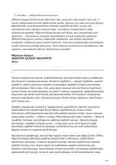

AQAbdulla Qahhor hayoti va ijodiy jasoratiga bag'ishlangan ta'sirli esse.
Ushbu asar buyuk o'zbek yozuvchisi va dramaturgi Abdulla Qahhorning hayoti, ijodiy merosi hamda adabiyot oldidagi jasoratiga bag'ishlangan. Kitobda adibning so'zsiz haqiqatparvarligi, so'z san'atiga bo'lgan yuksak mas'uliyati va ma'naviy kurashlari tahlil qilinadi.